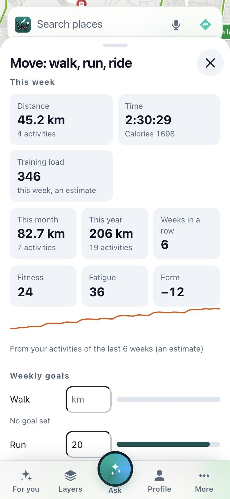
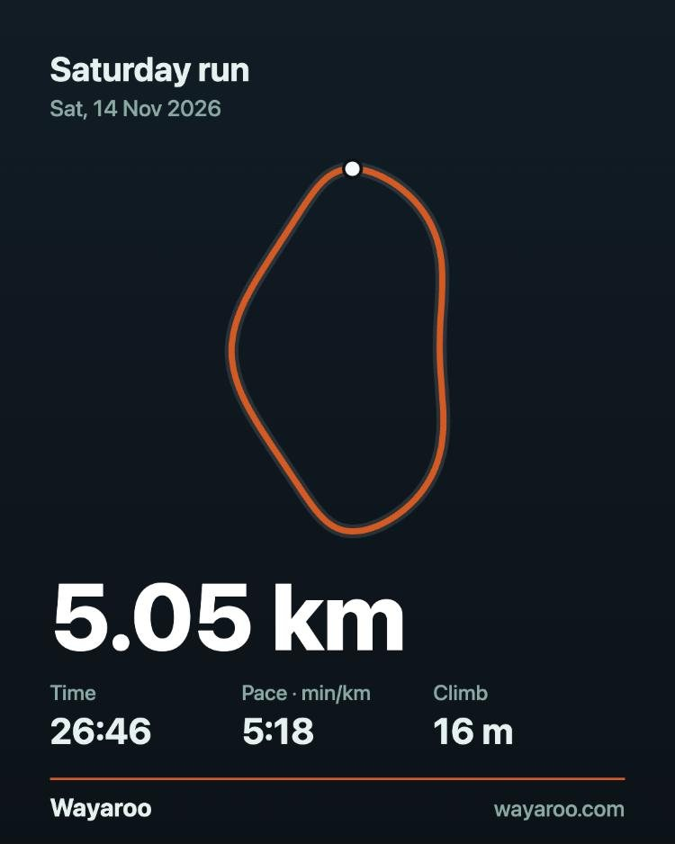

Record your walks, runs and rides. Free, with no account.
Move is the part of Wayaroo that records a walk, a run or a bike ride with your phone's GPS: distance, time, pace or speed, climb and calories, with the line of your route on the map.
Open Profile, then Move, pick walk, run or ride, and tap Start recording. There is nothing to sign up for, and your activities are kept on your phone, not on our servers.

Your progress
Best efforts. Your fastest 400 m, 1 km, 5 km, 10 km, half marathon and marathon when you run, 5 km to 100 km on a bike, and 1, 5 and 10 km on foot. A new best gets a "Personal best!" when you finish.
This week, this month, this year, and how many weeks in a row you've been out.
Weekly goals for walking, running and riding, with a bar that fills as the week goes.
Fitness, fatigue and form. An estimate from your last six weeks that shows when you are fresh and when an easy day would help.
Your own heatmap. Every route you've recorded, faint on the map.
After every activity
Per-kilometre splits, as bars against your fastest kilometre.
A height chart of the route.
The same route again? Move says how many times you've done it and how far this one was from your best time.
Replay in 3D: fly along your route over the map.
Share a picture of your route and your numbers. The picture shows the shape of the route, not the streets around it.
Save the route as a GPX file, to open it in other fitness and map apps.

While you move
The screen stays on and shows distance, time, pace and climb.
A voice can say each kilometre and its pace, so the phone can stay in your pocket.
Pause and resume at any time.
Auto-pause, when you switch it on: the recording stops by itself when you stand still, and starts again when you move.
In the iPhone app, Move can also bring in the walks, runs and rides of the last week from the Health app, so an activity recorded by a watch shows up too.
Good to know
Distance and pace come from your phone's GPS. Tall buildings, tunnels and heavy tree cover can bend the line. Calories are an estimate from the kind of activity and your weight. Fitness, fatigue and form are estimates too, not medical or training advice. Keep the phone in a pocket or a mount and watch where you're going.
Get Wayaroo on the App Store, or use it in your browser. Free, no account, 20 languages. For iPhone and iPad. The Android app is in review at Google Play.